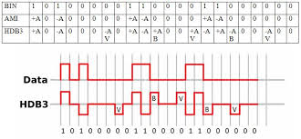
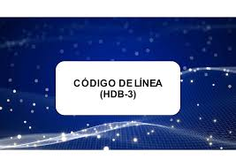

HDB3 es otro esquema avanzado basado en AMI, desarrollado principalmente para sistemas europeos. Forouzan y Stallings destacan su importancia en telecomunicaciones digitales.
HDB3 reemplaza secuencias de cuatro ceros por patrones especiales que aseguran transiciones suficientes para la sincronización. Tanenbaum explica que esta técnica mantiene la eliminación del componente DC y mejora la detección de errores. Proakis señala que HDB3 es altamente eficiente y confiable.


En conclusión, HDB3 es un código robusto y eficiente que garantiza una transmisión confiable en sistemas digitales modernos.